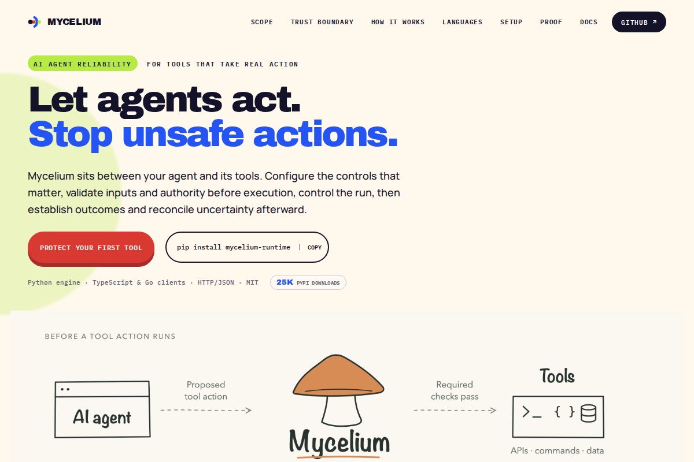
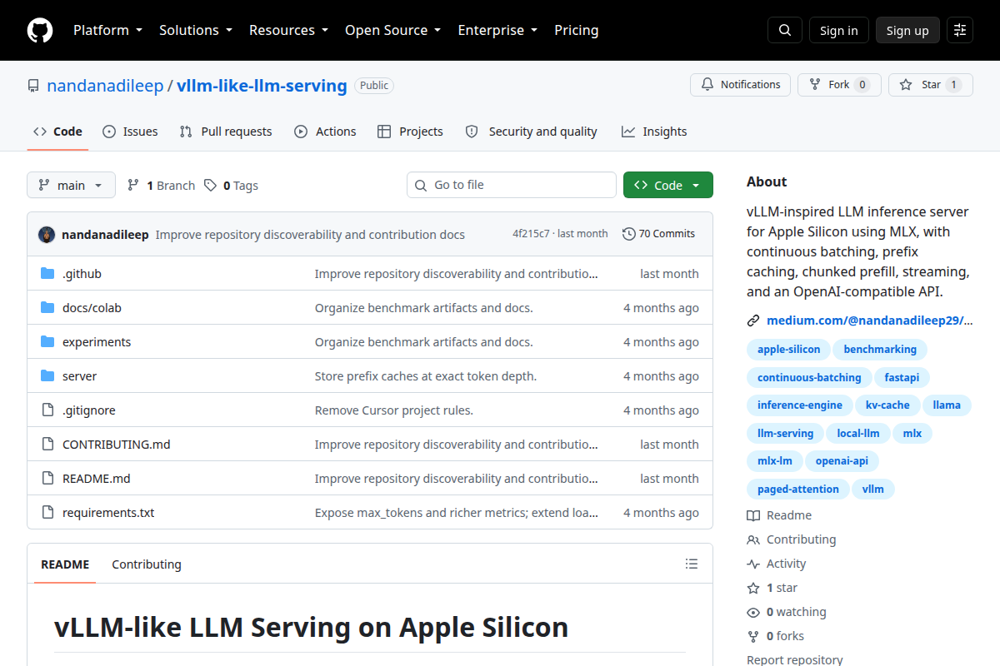
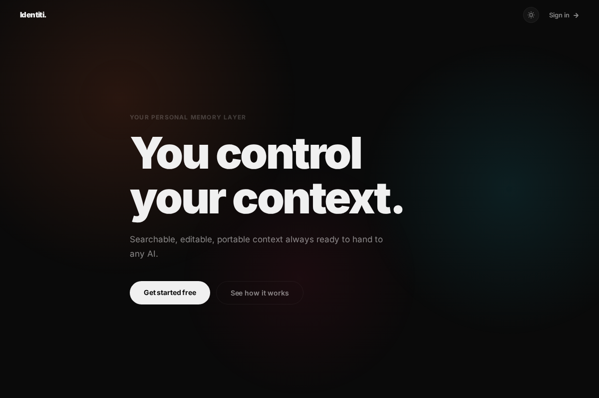
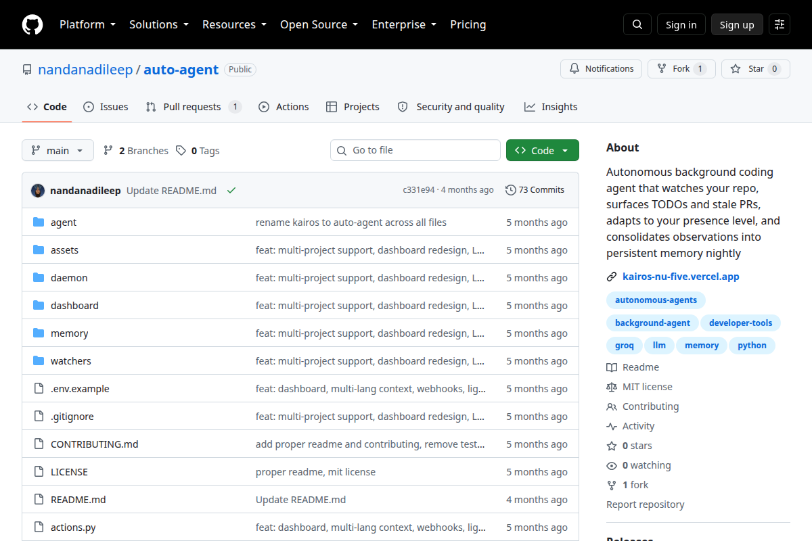
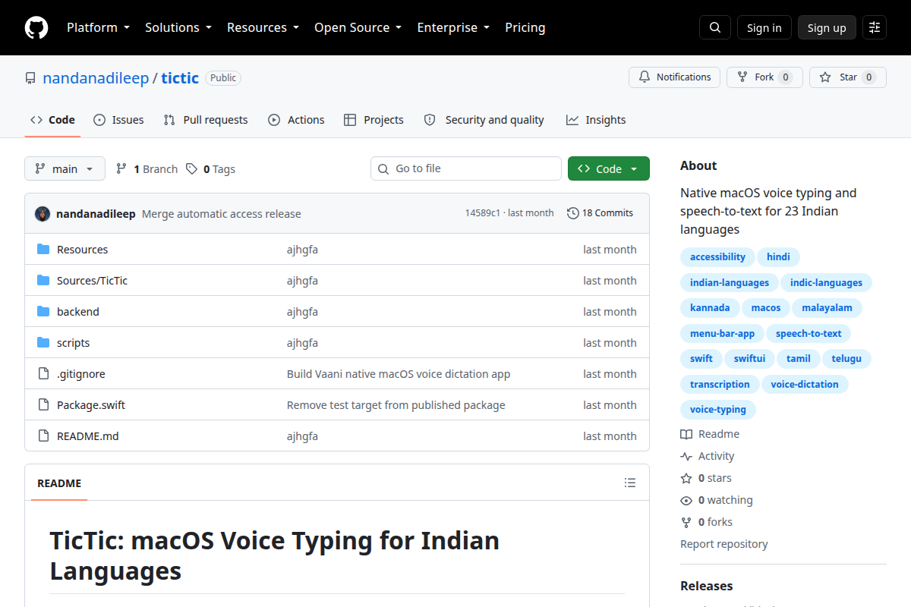

Mycelium
Open-source reliability runtime for AI agent tool calls. 30k PyPI downloads.
Alum @ IITM ’24 · AI Engineer @ Jaguar Land Rover
Building reliable AI infrastructure for production

Open-source reliability runtime for AI agent tool calls. 30k PyPI downloads.

MLX-based LLM serving with continuous batching and OpenAI-compatible API.

Personal AI memory layer using Neo4j knowledge graphs and confidence scoring.

Autonomous background coding agent with presence-aware notifications.

Native macOS voice typing for 23 Indian languages.
JLR Technology & Business Services India · Software-Defined Vehicles
Global Techathon 2026 Winner
Built Meridian, an AI hiring platform with skill-ontology graphs, evidence-grounded resume overlay, and adaptive assessments using topic-tree routing and Rasch ability estimation
Software Development Engineer Intern
A technical essay on stable action identity, durable claims, and recovery classification
Comprehensive guide to agent reliability and failure prevention
Deep dive into MLX inference architecture and continuous batching
Rebuilding a tiny GPT into a mini DeepSeek one component at a time
I'm an AI engineer working on AI systems for software-defined vehicles. I graduated from IIT Madras in 2024 (B.Tech, Civil Engineering).
My work focuses on reliable agent execution, LLM infrastructure, and the practical challenges of putting AI systems in production. I built Mycelium to solve the problem of retried tool calls in agent systems, and I explore LLM serving, knowledge graphs, and autonomous coding agents.
I'm currently working full-time, but I'm always interested in collaboration or new opportunities. Email me at nandanadileep29@gmail.com.